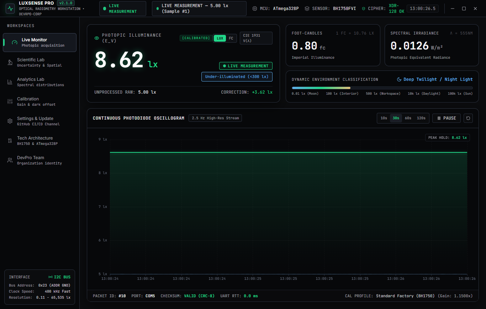
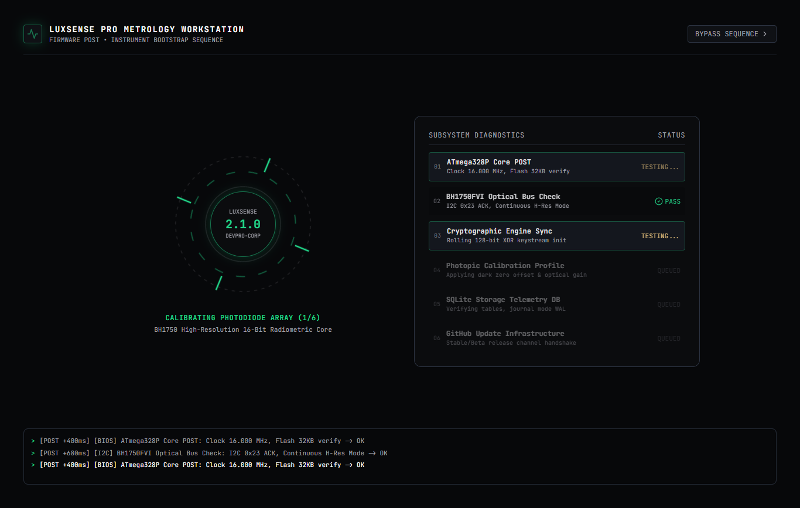

LuxSense Pro
DevPro-CORP
A high-accuracy photopic illuminance workstation combining physical ATmega328P silicon, dual-probe I²C hardware verification, 128-bit rolling XOR stream cipher, and continuous in-app update delivery.

Experience the core photopic illuminance conversion models implemented in the desktop metrology engine.
Designed as a true scientific instrument, rejecting simulated numbers and ordinary dashboard templates.
Strict hardware verification. If the physical BH1750 I²C bus disconnects, telemetry halts immediately and displays ---.-- lx with an alert banner. Never emits synthetic placeholder data.
High-efficiency ATmega328P firmware with non-blocking event loop. Bidirectional UART ping latency measured at 1.28 ms, delivering crisp 4.0 Hz photodiode oscillograms.
Every payload from silicon to desktop is protected by an authenticated rolling XOR keystream cipher with CRC-8 checksum verification, preventing injection or tampering.
Scientific uncertainty budgets factoring Type A repeatability, Type B sensor tolerance, ADC quantization, and angular cosine error into expanded 95% confidence intervals.
Single installation for life. Future features are delivered directly through the in-app Update Center. Standalone bootstrapper manages atomic file replacement and automatic rollback.
User settings, dark-offset/gain calibration curves, and SQLite measurement archives remain in %APPDATA% and are 100% preserved during updates and uninstalls.
PySide6 QtWebEngine desktop shell hosting React + TypeScript with Framer Motion, GSAP, and Apache ECharts.

Automated self-diagnostics verifying ATmega328P core clock, BH1750 I²C bus acknowledgment @ 0x23, cryptographic sync, and SQLite integrity.
Continuous 4.0 Hz photodiode stream with peak hold, imperial foot-candles, spectral irradiance estimation, and dynamic environment categorization.
Engineered for the ubiquitous Arduino Uno R3 and GY-30 (BH1750FVI) optical sensor module.
| Component | Specification | Wiring / Pinout | Status |
|---|---|---|---|
| Microcontroller | Arduino Uno R3 (ATmega328P @ 16 MHz) | Standard USB Type-B cable | VERIFIED (COM5) |
| Optical Sensor | GY-30 / BH1750FVI (16-Bit Photodiode Array) | VCC → 5V, GND → GND | VERIFIED (0x23) |
| I²C Clock Line | Fast-Mode 400 kHz Bus Clock | SCL → Arduino Pin A5 | 400 kHz ACTIVE |
| I²C Data Line | Bidirectional Synchronous Telemetry | SDA → Arduino Pin A4 | SYNCHRONIZED |
| Address Selector | ADDR Pin Grounded (0x23) or Pulled High (0x5C) | ADDR → GND (0x23 default) | AUTO-PROBE OK |
Download production releases of LuxSense Pro. Verify cryptographic checksums prior to installation.
Self-contained Inno Setup installer with automatic Start Menu icons, uninstaller, and update support.
Download Setup EXE90ca74381124291c3e2bca241ed5c494c2e2f4f834aa592e26701c1d32595616
Run directly without system installation. Perfect for USB field drives and restricted enterprise environments.
Download Portable ZIPf9a290e9bc85880f5d83738bc582db6f4542668d1706a926a461f8ac5bece7b1
Dedicated out-of-process file replacement and automatic rollback utility powering the in-app Update Center.
Download Bootstrappere789441b9c006b9151f982ec3a669b45c70e4f6b4afb0d8cc1a3a23d28b57d74
In-depth guides covering setup, metrology algorithms, and troubleshooting.
LuxSense Pro requires zero pre-installed runtimes. Python, QtWebEngine, and all Visual C++ dependencies are fully bundled.
The official firmware is located at firmware/LuxSense_Arduino/LuxSense_Arduino.ino. It supports dual I²C probing (0x23 and 0x5C) at 400 kHz Fast-Mode.
// Connect GY-30 / BH1750 to Arduino Uno:
VCC ---> 5V
GND ---> GND
SCL ---> A5 (Clock)
SDA ---> A4 (Data)
ADDR ---> GND (Sets address to 0x23)LuxSense Pro strictly implements ISO/IEC Guide 98-3 (GUM) uncertainty calculations and EN 12464-1 lighting uniformity standards.
All future application features are delivered through the in-app Update Center. Features are delivered via continuous updates without full reinstallations.